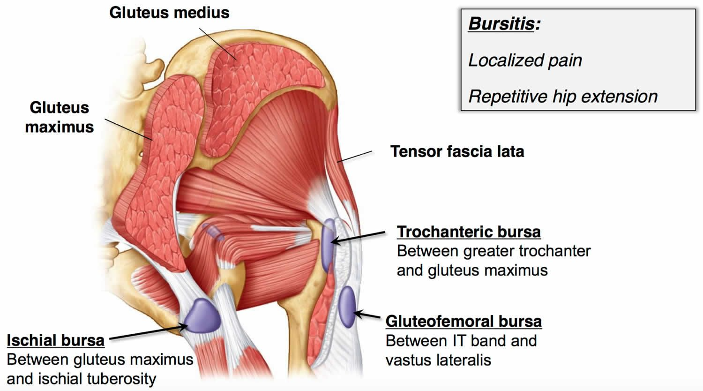
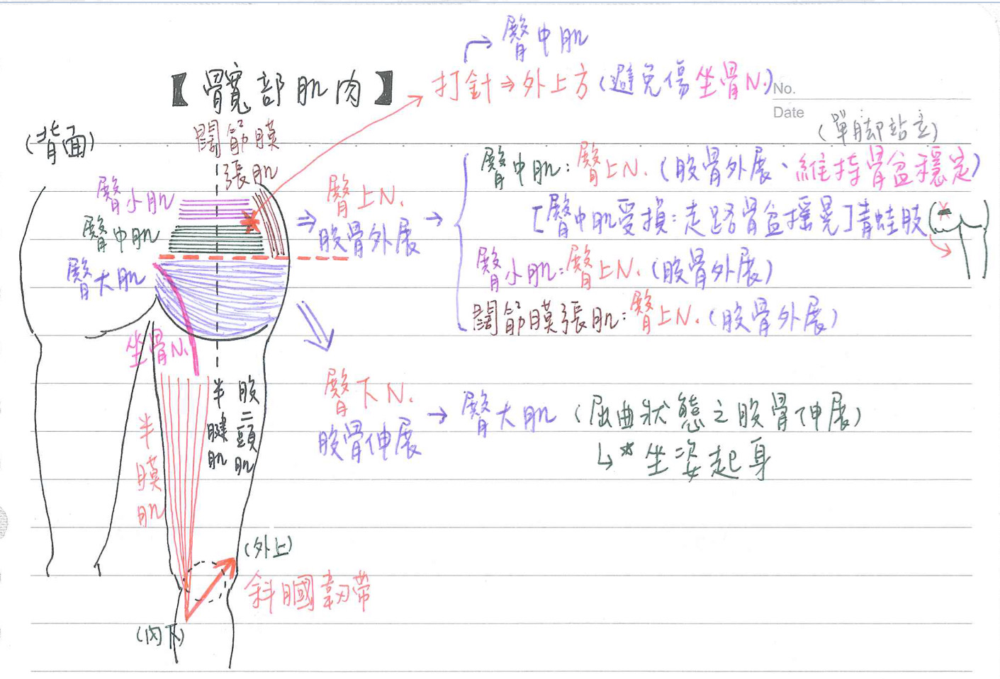

💪🏼 肌肉系統：髖部肌肉[神經支配考N次]
移動髖部的肌肉
- 腿後肌群：半腱肌、半膜肌、股二頭肌(皆由坐骨N(脛分支).支配)
| 屈曲(flexion) | 伸展(exteusion) | 外展(abduction) 內旋(medial rotation) | |||
|---|---|---|---|---|---|
| 髂肌(iliacus) | 股N | 臀大肌(gluteus maximus) | 下臀N | 臀中肌(gluteus medius) | 上臀N |
| 腰大肌(psoas major) | 腰神經叢 | 半腱肌(semitendinosus) | 坐骨N | 臀小肌(gluteus minimus) | 上臀N |
| 股直肌(rectus femoris) | 股N | 半膜肌(semimembranosus) | 坐骨N | 闊筋膜張肌(tensor fascia lata) | 上臀N |
| 縫匠肌(sartorius) | 股N | 股二頭肌(biceps femoris) | 坐骨N | ||
| 內收大肌(adductor magnus)伸展部 | 脛N |
| 外展(abduction) | 內收(adduction) | 外旋(lateral rotation) | |||
|---|---|---|---|---|---|
| 縫匠肌(sartorius) | 股N | 內收肌群 | 閉孔N | 梨狀肌(piriformis) | ★薦神經叢 |
| 梨狀肌(piriformis) | 薦神經叢 | 股薄肌(gracilis) | 閉孔N | 閉孔外肌(obturator externus) | 閉孔N |
| 恥骨肌(pectineus) | ★[108-2]股N 閉孔N(考選部這個沒算對) | 閉孔內肌(obturator internus) | ★閉孔內肌N | ||
| 上孖肌(gemellus superior) | ★閉孔內肌N | ||||
| 下孖肌(gemellus inferior) | ★股方肌N | ||||
| 股方肌(quadratus femoris) | ★★[108-2]股方肌N | ||||
| 臀大肌(gluteus maximus) | 下臀N |
髖部肌肉-個論
| 肌肉名 | 神經支配 | 起-止 | 運動 | 備註 |
|---|---|---|---|---|
| 髂肌(iliacus) | 股N | 屈曲大腿 | 髂腰肌(髂肌+腰大肌)為臀部屈曲的主要肌肉 | |
| 腰大肌(psoas major) | 腰神經叢 | 屈曲大腿 | ||
| 臀大肌(gluteus maximus) | ★★★下臀N | 起：髂骨&薦椎&尾椎 止：★髂脛束(iliotibial tract)&股骨臀肌粗隆 | 伸展大 | 將屈曲狀態之股骨伸展 臀大肌受損：無法從坐姿起身或爬樓梯 |
| 臀中肌(gluteus medius) | ★★★上臀N | 髂骨-股骨大轉子 | 外展/內旋大腿 | [重點]單腳站立時維持骨盆穩定，防止骨盆向該側突出/對側下傾 臀中肌受損：走路時軀幹偏向患側、站立時偏向健側(Trendelenburg sign) 青蛙肢：臀中肌攣縮(打針沒消毒好造成臀中肌fibrosis) |
| 臀小肌(gluteus minimus) | ★上臀N | 髂骨-股骨大轉子 | 外展/內旋大腿 | |
| 闊筋膜張肌(tensor fascia lata) | ★★★上臀N | 髂骨-★髂脛束(iliotibial tract) | 股骨外展 穩定膝關節於伸展狀態 | |
| 梨狀肌(piriformis) | ★薦神經叢 | 薦椎-股骨大轉子 | 外展/外旋大腿 | |
| 恥骨肌(pectineus) | ★股N 閉孔N(考選部這個沒算對) | 內收大腿 | 大部分由股N支配，只有少數肌纖維由閉孔N支配 | |
| 閉孔外肌(obturator externus) | ★閉孔N(後支) | 外旋大腿 | ||
| 閉孔內肌(obturator internus) | ★★★閉孔內肌N | 外旋大腿 | 閉孔內肌N、閉孔N是不同的兩條~ | |
| 上孖肌(gemellus superior) | ★★★★閉孔內肌N | 外旋大腿 | ||
| 下孖肌(gemellus inferior) | ★股方肌N | 外旋大腿 | ||
| 股方肌(quadratus femoris) | ★★[108-2]股方肌N | 外旋大腿 |
髖關節活度角度
- 外展(abduction)：約30度
- 內收(adduction)：約120度
- 內旋(medial rotation)：約60度
- 外旋(lateral rotation)：約30度
滑液囊(bursa)
- 髂恥滑液囊(iliopectineal)：髂腰肌-恥骨
- 轉子滑液囊(trochanteric)：大轉子-臀大、中、小肌
- 坐骨滑液囊(ischial)：坐骨粗隆-臀大肌
- ★臀股滑液囊(gluteofemoral)：髂脛束-股外側肌


📖 書本補充：與筆記不同或筆記沒寫到的地方
⚠️
以下為對照書本後整理，筆記原文未更動。標「筆記 vs 書」的是兩邊寫法不同、建議回頭確認的地方。
臀部的肌肉（p.377–378）
- 臀大肌：起自臀線後面的髂骨、薦椎、尾椎及薦粗隆韌帶；止於髂脛束和臀肌粗隆；臀下N；作用＝伸展（特別是由坐姿站起時）、外旋大腿。
- 臀中肌：起自髂骨的前和後臀線之間；臀小肌：起自髂骨的前和下臀線之間；兩者都止於股骨大轉子。
- 臀中、小肌作用：外展和內旋大腿；在對側小腿抬起時使骨盆（上半身）保持水平（與筆記的 Trendelenburg sign 相呼應）。
- 闊筋膜張肌：起自髂前上棘；經由髂脛束至脛骨外髁；可使膝關節穩定在伸展狀態。
- 臀中肌、臀小肌、闊筋膜張肌都由臀上N支配。
- 外旋肌群（梨狀肌、閉孔內肌、上孖肌、下孖肌、股方肌）的共同作用：外旋大腿、協助將股骨頭固定在髖臼內。
- 梨狀肌：書上起點寫「薦棘和薦粗隆韌帶」，止於股骨大轉子；薦神經叢（S1 和 S2）。Claude 註：一般教科書寫梨狀肌起自薦骨前面及薦粗隆韌帶，書上「薦棘」可能是指薦骨，請以課本／原文書為準。
- 閉孔內肌：起自閉孔邊緣和閉孔膜；上孖肌：起自坐骨棘；下孖肌：起自坐骨粗隆。
- 股方肌：起自坐骨粗隆、止於轉子間嵴（其餘四條止於大轉子）。
- 筆記 vs 書：筆記把梨狀肌同時列在「外展」與「外旋」；書上梨狀肌的作用只寫外旋大腿、協助固定股骨頭，沒有列外展。
- 書的提示：髂脛束＝大腿外側的闊筋膜（大腿深筋膜）特化，是臀大肌和闊筋膜張肌的附著處，附著到脛骨外側，協助膝關節穩定於伸展狀態。
動脈和神經（p.379–380）
- 書的對照表：
- 臀上A：臀大、臀中、臀小、闊筋膜張肌；臀上N：臀中、臀小、闊筋膜張肌（不支配臀大肌）。
- 臀下A：臀大肌、閉孔內肌及上孖肌、股方肌及下孖肌；臀下N：只有臀大肌。
- 到閉孔內肌的神經：閉孔內肌＋上孖肌；到股方肌的神經：股方肌＋下孖肌。
- 書的提示：臀大肌的血液來自臀上、臀下兩條動脈，但神經只來自臀下N；臀下A有一條分支供應坐骨神經。
- 臀上A從梨狀肌上方進入臀部（108-2-7）；臀下A穿過坐骨大孔並供應臀大肌（103-2-23）。
屈髖與內收的相關肌肉（p.381）
- 髂腰肌：起自 T12–L5 椎骨及髂窩附近 → 股骨小轉子；腰神經（L1–L3）及股神經；屈曲大腿。
- 筆記 vs 書：恥骨肌作用，筆記只寫「內收大腿」；書上寫內收、屈曲及內旋大腿，神經寫股及閉孔（與筆記「大部分股N、少數閉孔N」一致）。恥骨肌起自恥骨、止於股骨梳狀線。
- 閉孔外肌：起自閉孔和閉孔膜的邊緣 → 股骨轉子窩；閉孔N；外旋大腿並將股骨固定在髖臼。
- 縫匠肌的作用書寫屈曲、外展及外旋大腿、屈曲小腿（盤腿／翹腳時最能說明）。
📝 書中歷屆考題（點選答案作答）
106-2-10p.378
下列那兩塊肌肉之遠端，附著於髂脛徑 (iliotibial tract)？
💡 A 附著在股骨；C 附著在脛骨內側；D 分別附著到腓骨和脛骨粗隆。
111-2-30p.378
股骨大轉子 (greater trochanter) 碎裂時，對下列何者的功能影響最小？
💡 臀大肌附著在髂脛束及股骨的臀肌粗隆，與大轉子無關。
101-2-16p.379
臀下神經 (inferior gluteal nerve) 受到壓迫損傷，下列何者會受影響？
💡 B、C、D 由臀上N支配。
101-1-6p.379
闊筋膜張肌 (tensor fasciae latae) 退化萎縮，可能因下列何者受損而造成？
104-1-15p.380
因神經受損而使得闊筋膜張肌 (tensor fasciae latae) 退化萎縮，下列何者可能也會受影響？
💡 闊筋膜張肌由臀上N支配；臀大肌由臀下N；梨狀肌、上孖肌分別由到梨狀肌及到閉孔內肌的神經支配。
109-2-9p.380
支配臀中肌 (gluteus medius) 的神經發炎，下列何者最可能同時受影響？
💡 臀中肌和闊筋膜張肌都受臀上N支配。
101-2-17p.380
支配下孖肌 (inferior gemellus) 的神經受損，下列何者也可能退化萎縮？
💡 支配下孖肌的神經也支配股方肌；支配上孖肌的神經也支配閉孔內肌。
110-1-10p.380
支配閉孔內肌 (obturator internus) 的神經損傷時，下列何者的功能最可能同時受影響？
💡 「到閉孔內肌的神經」同時支配上孖肌。
103-2-23p.380
下列何者通過坐骨大孔 (greater sciatic foramen) 且供應臀大肌 (gluteus maximus) 的血液？
108-2-7p.380
下列何者由梨狀肌 (piriformis) 的上方進入臀部？